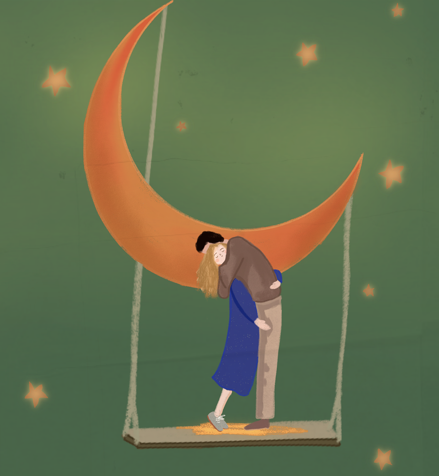

Hi，首先感谢你阅读我的碎碎念！
创号4年多，我却从未以第一人称写过随想，始终觉得那太过私密。
不过最近我发现，真正会驻足阅读的，不过是少数几位读者。
既如此，不如把这片小小天地当作“碎碎念”的落脚地，把最真实的思索都写进来。
真心感谢你能阅读我的文字！
今天，想和你聊聊『异性朋友』与『吃醋』的话题。
前几天与朋友们聚餐时，一位女生朋友无意间提到，她的男朋友竟为我吃起了醋。
当然了，这是无伤大雅的插曲——
我和她本就是纯粹的异性好友，彼此从未有过想要越界的想法，再加上我们如今在不同学校，见面的频率本就不高。
况且，我朋友擅长处理人际关系，她和她男朋友已经沟通好了，而她和我的相处模式只需要微调一下（比如，我不要随时随地给她打电话），事情就完美解决了。
他们的感情愈发醇厚，我们的友情亦未蒙尘。这是一个大家都很开心的状态。
但我脑海中仍有一个问题：为什么他会吃她的醋呢？
一个非常直白也非常浅显的回答是：因为他喜欢我朋友呀。
试想，假如他不喜欢我朋友，又怎会介意她与我的交往？他吃醋，恰恰说明他在乎我朋友呀。

但如果再往深处想呢？
我斗胆提出一种假设：这或许是现代人恋爱趋于“扁平化”的一个具体缩影。
那什么叫扁平化呢？扁平化，换句话说，就是没有深度连结。
比如快餐式恋爱，就属于典型的扁平化恋爱；不过扁平化恋爱未必全都是快餐式恋爱，因为有些扁平化的恋爱也可以谈上一段时间。
如今的亲密关系，似乎总在追求一种“功能性”的陪伴：吃饭搭子、学习搭子、旅行搭子、玩耍搭子.......
而即便是恋人之间的所谓“关心”和“付出”，在朋友之间也同样存在呀。
似乎，恋爱只是将朋友关系套上一层暧昧滤镜。诚然，这样的恋爱很快乐，也很甜蜜，这本没什么问题。
只可惜，我不是纯粹的享乐主义者。在我的世界里，恋爱不仅是一项娱乐活动，更是一种生活方式，如此才能实现彼此的深度连结。
真正的深度连结，应当是两个人一同成长、彼此渗透的过程。
韩剧《苦尽柑来遇见你》就阐述了这样一种理想主义：
剧中主角吴爱纯与梁宽植，既有青梅竹马在油菜花田追逐天光的烂漫，更有在命运巨浪里相互托举的厚重。
当吝啬的叔叔为一家六口人买5条鱼却唯独不给爱纯买时，宽植默默地给她送黄鱼，一条又一条，一年又一年。
当她被退学遭逢人生至暗时刻，这个寡言的少年竟敢冒天下之大不韪，带她私奔；
即便婚后面对传统家庭的层层刁难，他也始终坚定站在妻子一边，用“济州岛第一个与妻子同桌吃饭的男人”的姿态，在性别偏见筑起的高墙下，凿出一线天光。
他们的爱情，除了卿卿我我的日常，除了耳鬓厮磨的瞬间，还有用陪伴和责任编织出的跨越岁月的羁绊。
这份情感，既不浮于表面，也不囿于仪式，而是浸润在日常的柴米油盐中，又岂不让人动容？

而倘若情侣间没有类似的共振，双方便只能靠“你不能离其它异性那么近”的方式来凸显对方的唯一性和重要性了。
否则，一对没有共同经历的男女朋友，如果不靠“领地意识”来确认爱，又该如何区别异性朋友和恋人呢？
和曾经心动的身影
事实上，作为妇女之友的我，和女生朋友们的关系，也不仅仅局限于吃喝玩乐和八卦吃瓜。
比如，曾有朋友察觉出我隐瞒的自杀倾向，并坚持陪伴；再比如，朋友会在我生病的时候陪我去医院。
而我也会在力所能及的时候，尽可能关心帮助我的好朋友们（当然也包括男生，但男生不在本文讨论范畴）。
我的女生朋友们带给我许多感动，遇见她们是我莫大的幸运。然感动与心动的分野，就像海平面与星空的倒影，看似触手可及，实则隔着整片大气层的距离。
其实，我并非没有遇见过让我心动的身影。但我一次选择了隐藏，另一次选择了自杀式表白。
我并非担心“我们在一起之后会不会分手”这样的问题。对于一对深度连结的情侣来说，分手不应是痛苦的，而是，彼此无法想象，分手后失去对方的生活情景。
我也并非不主动——尽管看起来如此——这也是很多朋友对我的评价。
我只是觉得，在我们尚未成为“我们”这个最小单元，尚未达到“想要她的幸福让自己幸福”的境界之前，选择贸然前行或许太过仓促。
这些心情，在此前的推文中，也曾轻轻提及。
我常憧憬恋爱，却又无法企及。朋友问我，是不是要求太高啦？
一开始我矢口否认：我对女朋友没有什么要求。身高、外貌、年龄、性格甚至性别都不是我恋爱的门槛。

但如今我不得不承认：我的要求确实挺高的。当然，所谓“要求”并不针对她本人，而是针对“我们之间的关系”。
我的朋友也曾问过我，“你和其他女生（作为朋友）的关系那么好，那你怎么能体现女朋友的唯一性呢？”
我想，我和女朋友的关系，应该不止于“好”。
当然，这并不是说我对暧昧过敏——我当然希望和女朋友一起度过快乐的时光。腻歪和扁平化爱情当然不能划等号。
只是说，除此之外，我还期待我们之间更深度的连结。
我希望我们之间是平等的，是两个灵魂在对话中相互滋养；是真诚的，是彼此能在对方面前卸下所有伪装；是负责的，在风雨来临时成为彼此的避风港；是包容的，接纳对方所有的不堪与缺憾；是信任的，像溪流相信河床会带它找到海洋。
而对于异性朋友的问题，我是这样想的——
我希望她能和其它男生多接触（不过当然得看她是否愿意），如此她便能了解男生都有些什么共性，而我作为她的男朋友，又有什么个性的地方；
我希望她能继续和她的男生朋友自在往来。这不仅仅是因为“我尊重她自己的空间和圈子”，更是因为我深知，她的每个挚友都是执刀的手艺人，共同雕刻出她今日的模样。
那么，我会吃她男性朋友的醋吗？
现在我不敢断言说“不会”，毕竟我还没有真正谈过；但比起吃醋，我更愿意和他们成为朋友——我相信她的男生朋友们，一定也是很有趣的灵魂。爱屋及乌嘛。
不过更深层次的原因是，我们既然选择谈恋爱，就说明我们有彼此看重的、独一无二的理解与经历。我们之间自有默契的连结，而无需靠排斥异性来证明。
不知道你看到这里，会不会像我朋友一样揶揄：“你这是想要一开始就和一个陌生人成为老夫老妻吧？这怎么可能呢？”
是啊，这怎么可能呢。好像我是时候改变了。夜雨敲窗的某刻，我终于看清自己执念里的天真——
我似乎总想跳过春耕夏耘直接收割金黄，殊不知，麦穗的饱满需要季风与光阴的滋养。
生活从不会完全按照理想展开，就像玻璃瓶无法装进济州岛的海浪。关系是一个动词，感情要从头经营。
我一直在迷恋空中楼阁的美，却又惧怕脚下真实的荒芜。
也许在我遇见下一个心动的女生时，我仍会捧出澄澈如初的心意，却不再执着于将星火燎原的瞬间定格成永恒。
或许真正的深度连结，本就该在晨昏交替中自然生长。
最后，愿读到这里的你，无论此刻正与谁共享同一片月光，都能在520的晚风里触摸爱的真实质地。
版权及AIGC声明
- 本文未使用任何生成式AI进行图片或文字创作。
- 本文部分未标注来源的图片：
https://unsplash.com/photos/a-group-of-people-standing-on-top-of-a-hill-YYy0Ym0ae5ghttps://pixabay.com/zh/illustrations/woman-couple-lovers-painting-love-8326207/https://pixabay.com/zh/illustrations/love-couple-campfire-cozy-lovers-6328393/https://pixabay.com/zh/illustrations/tunnel-dark-shadowmen-scary-secret-7589526/https://unsplash.com/photos/woman-on-bike-reaching-for-mans-hand-behind-her-also-on-bike-AsahNlC0VhQhttps://unsplash.com/photos/an-aerial-view-of-a-river-running-through-a-canyon-SqosAhFviRI


发表您的看法